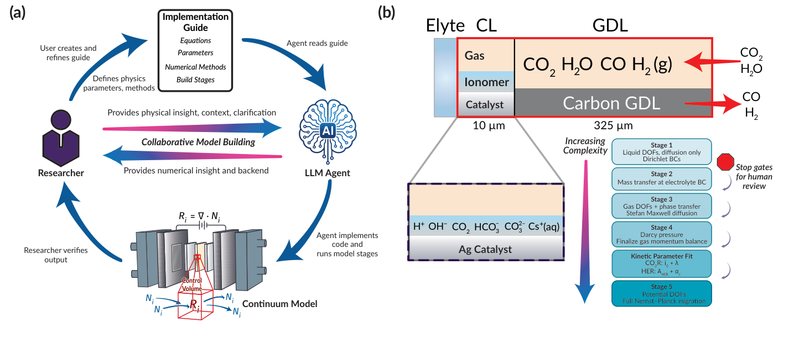
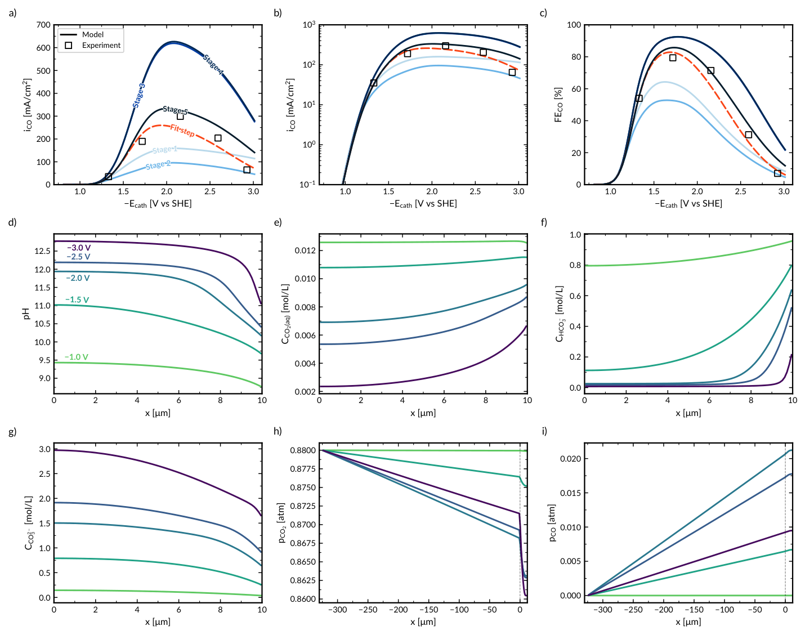
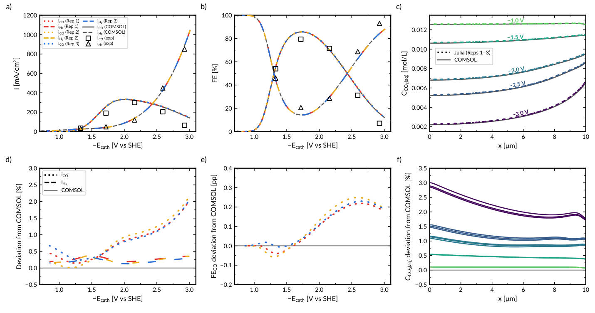
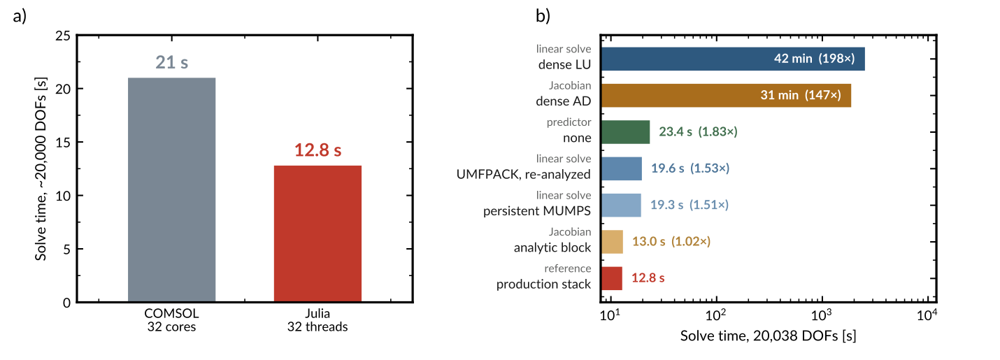
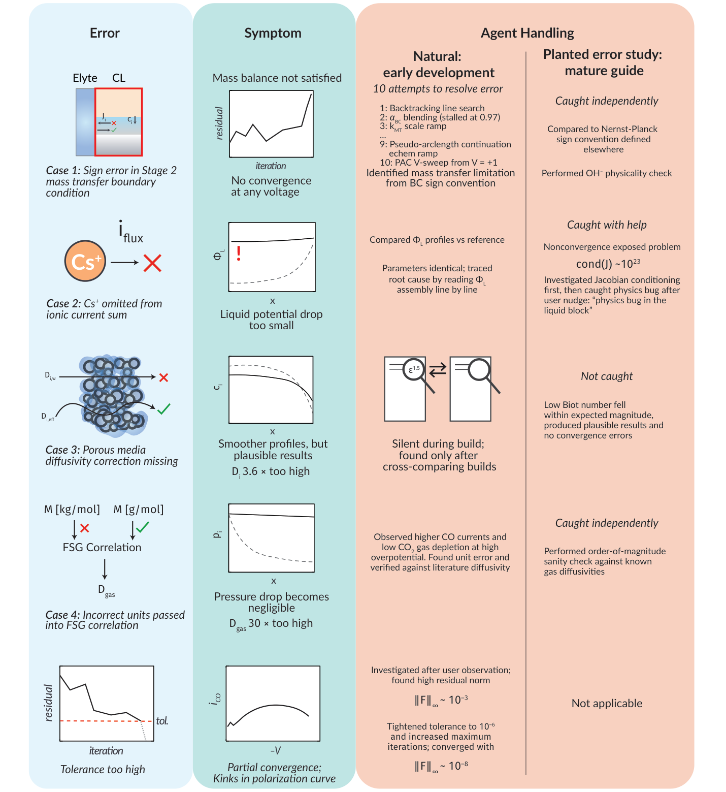
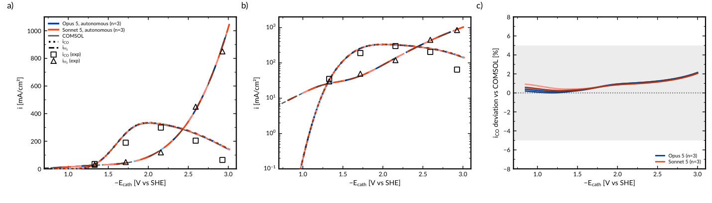

从物理方程到开源求解器：LLM 辅助生成电化学多物理场模型
论文原文 ↗Sebastian Castro、Maya F. Schuchert、Spencer A. McCluskey、Eric W. Lees、Justin C. Bui，LLM-Assisted Generation of Transparent, Open-Source Multiphysics Models of Electrochemical Devices，arXiv，2026。论文页面 · · 代码与规范
CO₂ 电解器的性能由电极内部的浓度、电势、pH 和传质共同决定。这些局部量难以直接测量，却能通过多物理场连续模型求解。障碍常在实施：研究者懂电化学，仍需掌握复杂数值程序或使用专有软件。本文让研究者以方程和物理描述定义模型，由 LLM 智能体生成开源 Julia 求解器，使物理选择仍由研究者掌控，而数值实施可以交给智能体完成。
方法怎么做：把建模规范变成分阶段可运行程序
测试对象是一维稳态银催化 CO₂ 还原气体扩散电极，温度 50 °C，包含催化层和气体扩散层。连续介质近似用平均孔隙性质描述位置变化的浓度、电势和压力。CO₂ 从气侧进入并生成 CO，析氢与之竞争；OH⁻生成改变 pH，碳酸盐平衡影响 CO₂供应，气液交换和离子迁移又影响反应速率。这些方程需要联立求解。
工作流以机器可读 Markdown 规范为入口。研究者写明控制方程、参数及单位、边界条件、数值方法和各阶段检查点，智能体据此生成、执行并调试 Julia 程序。规范同时保留物理含义和实施要求，使研究者可以直接查看每个步骤使用了什么关系。

原图 1：研究者定义物理与检查点，智能体分阶段实施；右侧将电极结构连接到逐步增加物理过程的模型。
构建从液相扩散、反应和缓冲平衡开始。随后将固定浓度边界改成有限传质，加入气体扩散与气液交换，再完成压力和流动；利用实验电流拟合动力学参数后，进一步加入离子迁移与电势耦合。每个阶段运行守恒、电流连续、方程残差及浓度图等检查，使新增加的过程和模型变化直接对应。
待求变量从初始约 400 个增加到最终 1,480 个。求解完成后，电压扫描返回 CO 与 H₂ 分电流、法拉第效率及局部 pH 和浓度场。法拉第效率描述流经电极的电荷中有多少用于相应产物，内部场则解释外部电流背后的反应与传质环境。

原图 2：新增有限传质、气侧供给和迁移等过程后，电流、效率与局部浓度相应变化，连接方程选择和器件行为。
主要结果：一致实施、实用计算与显式规范的作用
**独立生成的开源模型取得高度一致的结果。**三个独立 Julia 构建与采用相同物理和参数的 COMSOL 模型比较，CO 电流扫描的均方根偏差平均为 2.27 mA cm⁻²，约占峰值 CO 分电流的 0.7%；Julia 构建之间约为 0.12 mA cm⁻²，即峰值的 0.04%。电流、效率和内部场的一致性，显示物理规范能够稳定转化为完整数值实现。

原图 3：上排对照电流、效率与浓度曲线，下排放大相对 COMSOL 的差异，展示独立构建之间的一致程度。
开源实现还允许针对问题调整计算方法。在约两万个待求变量的测试中，Julia 完成 89 个电压点约需 13 秒。利用方程的稀疏结构、选择合适线性求解部件，可以保持电流曲线的同时显著降低耗时。模型的方程、求解步骤与实现细节都能被查看和修改，为后续设计计算提供了灵活性。

原图 4：相同模型结果下，不同求解部件产生不同耗时；稀疏结构利用和开源部件选择影响计算效率。
**植入错误检验了规范和调试过程的作用。**作者有意加入边界通量符号、单位、离子电流项及多孔介质扩散修正等错误。智能体能够自行发现并修正符号和单位问题，离子电流遗漏经人提示后修正；漏掉孔隙修正的扩散关系则持续存在，求解仍收敛，动力学拟合也能部分吸收它的影响。这组作者专门设计的实验显示，显式方程、分阶段检查和物理解释共同决定调试过程，数值症状与物理错误之间具有不同对应关系。

原图 5：错误类型、可见症状与修正过程并列，展示智能体能够处理的实施问题，以及较隐蔽本构关系错误的表现。
**成熟规范支持自主重复构建。**两种智能体各进行三次无人中途审查的构建，六次输出都与标准构建接近。规范将已经确定的物理、参数、阶段顺序和检查点一起传递，使同一科学模型可以被不同智能体自动实施。

原图 6：两类智能体的重复电流与效率曲线相互接近，显示显式规范对自动实施可重复性的作用。
领域贡献：以物理描述作为计算建模的主要输入
本文将电化学模型的可复用对象从专门代码或软件工程文件，推进到控制方程、参数和求解要求组成的物理规范。研究者负责选择与解释物理，智能体承担程序生成和实施，最终获得透明、可修改、可共享的开源求解器。它降低了电化学知识到多物理场计算之间的实施门槛，也让独立构建、数值优化和模型调试围绕同一份物理描述开展。
附：完整原始摘要中文翻译
多物理场连续模型是研究电化学器件的有力工具，能够支持计算机中的反应器设计，并解析控制器件性能、却难以通过实验测量的局部 pH、电势和浓度场。然而，构建这类模型需要大量数值计算专业知识，或依赖专有软件。在此，我们表明，前沿大语言模型智能体可以消除这一实施负担，同时使底层物理仍由研究者掌控。以多孔气体扩散电极中一维电化学 CO₂ 还原制 CO 为测试案例，我们建立了一套机器可读、由人指定的建模规范，其中包含控制方程、参数、数值方法、逻辑构建阶段，以及可由人核验的检查节点。智能体根据这一规范，在开源 Julia 中可重复地构建完整多物理场模型。独立构建的模型，包括完全自主的智能体构建模型，与等价 COMSOL 实现之间的差异不超过峰值 CO 分电流密度的 0.7%，彼此之间的差异不超过 0.04%。系统植入的错误表明，明确规范对于可重复性至关重要，也揭示了智能体调试模型物理时的能力与局限。这一框架确立了一种更透明的多物理场建模方式：物理描述和控制方程成为计算模型开发的主要输入，取代专门编写的代码作为输入入口。